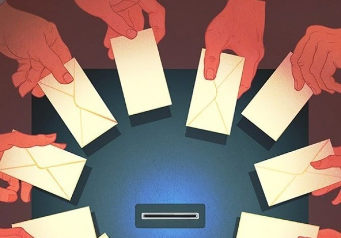

Insights
The Missing Millions
Why Young Voters Are Walking Away From British Elections
Read Article →
Original research, opinion essays and strategic analysis exploring political communication, democratic participation and the future of British politics.

Why Young Voters Are Walking Away From British Elections
Read Article →

Why Turnout Collapses Between Westminster and the Town Hall
Read Article →

What Devolution Reveals About British Voting Habits
Read Article →